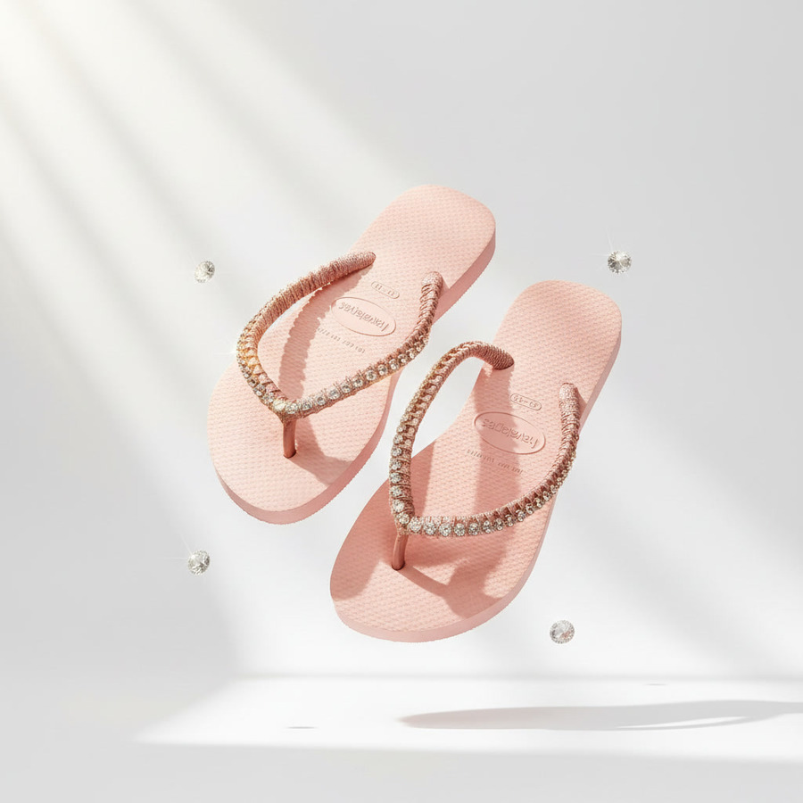
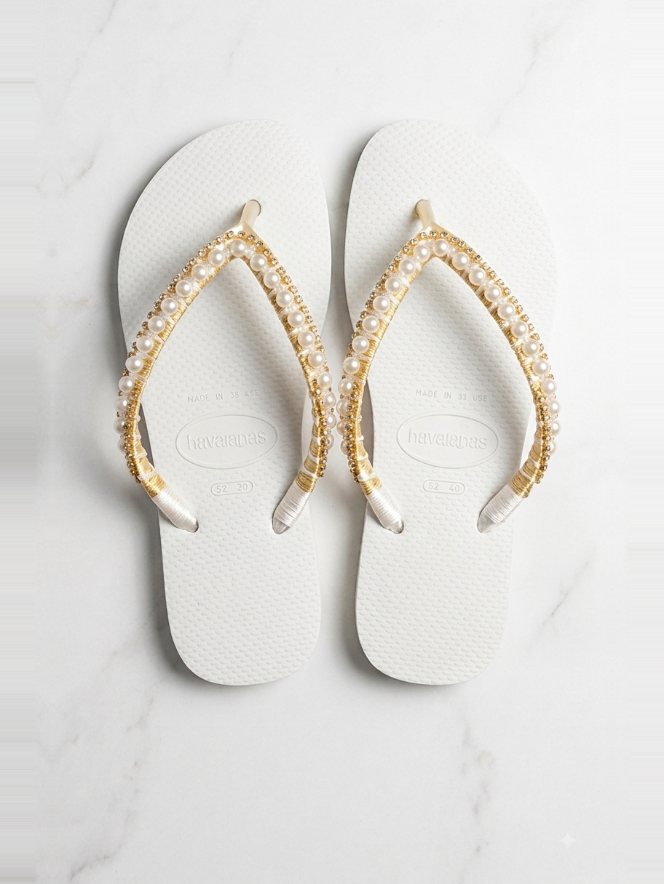

בחירת הצבע
לבן, שחור, ורוד פודרה, סגול, כחול או צהוב. הצבע שיישא את הכל.

כל זוג משובץ ביד, אבן אחר אבן — קריסטלים, פנינים ותליוני ים, על גוף הכפכף שאת בוחרת. נוחות ללא פשרות, בלי לוותר על הסטייל.

שלוש החלטות, וזוג שנוצר בשבילך בלבד. זמן עבודה שבוע עד עשרה ימים.
לבן, שחור, ורוד פודרה, סגול, כחול או צהוב. הצבע שיישא את הכל.
שורת אבנים עדינה, אבני חן גדולות או פנינים. כאן נקבע האופי.
כוכב ים, צדפה, או בלי כלום. הפרט האחרון שהופך את הזוג לשלך.
כל אחד מהם ניתן להזמנה מחדש בגוף הכפכף ובמידה שלך, או לשמש נקודת פתיחה למשהו אחר לגמרי.
₪180–210 לדגמי הקולקציה · עיצוב אישי מתומחר לפי הדגם
מאז שאני זוכרת את עצמי, אמנות ואסתטיקה הן חלק ממני. תמיד אהבתי ליצור דברים ייחודיים מאפס, ללמוד לבד את הטכניקות, ופשוט ליהנות מהיצירה של עצמי.
כשהאחיינית שלי התחתנה, היא ביקשה ממני להכין לה נעליים נוחות ליום ההתארגנות שלה. כלה, אתן יודעות, צריכה שיהיה לה הכי נוח בעולם ביום שלה — אבל בלי לוותר על הסטייל. הבחירה שלי הייתה ברורה: נוחות ללא פשרות. לקחתי את כפכפי הוואיאנס המוכרים והטובים, והפכתי אותם לתכשיט מושלם.
התוצאה הייתה כל כך מרהיבה, שמיד הגיעו הבקשות שלכן — ״ריקי, תכיני גם לי!״ ומאז, אני פשוט זוכה לעשות את מה שאני אוהבת, ולהפוך את הצעדים שלכן למנצנצים וייחודיים.
נעים מאוד, אני ריקי זבולון.
מוזמנת להציץ בעיצובים ולשלוח לי הודעה — כתבי איזה דגם אהבת ובאיזו מידה, ואחזור אלייך עם הצעה.
לפתוח שיחה בוואטסאפ (נפתח בחלון חדש)